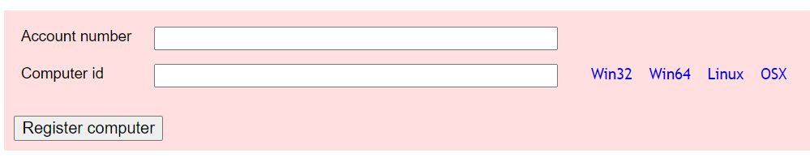
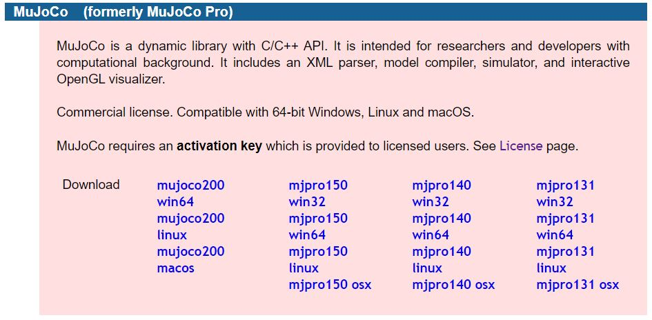
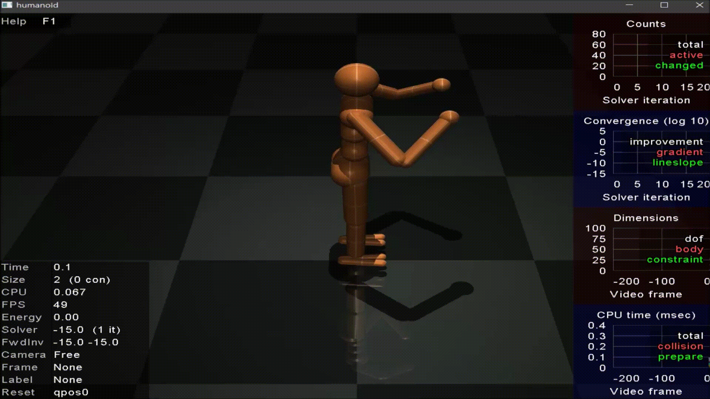
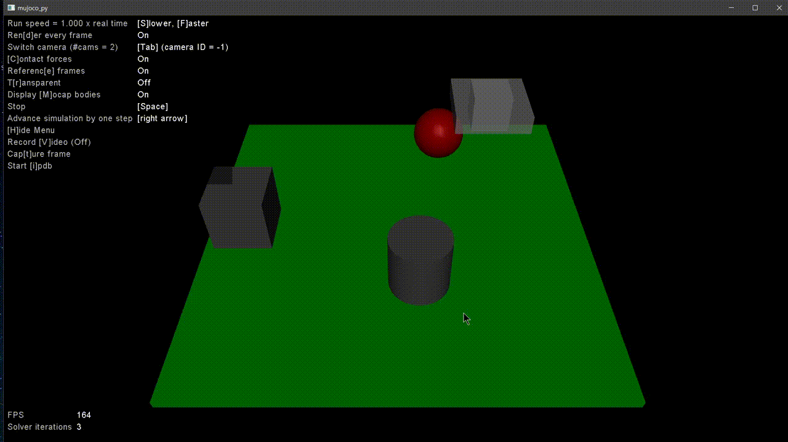

Install Mujoco in Window10
Reinforcement learning에서 많이 쓰이는 시뮬레이션 Mujoco Window10에 설치하기
Mujoco
-
Mujoco 에서 License tab으로 들어가서 Personal Student Software License를 받는다.
-
이메일로 Account number를 받는다.(spam도 확인하자)
-
다시 License 로 가서 Account number와 Computer Id를 입력한다.

-
다시 이메일로 MuJoCo Pro Personal Activation Key(mjkey.txt)를 받는다.
-
.mujoco라는 파일을C:\Users\사용자명\에 만든다. -
Products 에서
mjpro150 win64을 다운받아.mujoco에 압축을 풀어준다.(C:\Users\사용자명\.mujoco\mjpro150)
-
다운받은 mjkey.txt 파일을
C:\Users\사용자명\.mujoco와C:\Users\사용자명\.mujoco\mjpro150\bin에 옮긴다. -
cmd창을 열어서 cd 명령어로
C:\Users\사용자명\.mujoco\mjpro150\bin경로로 이동한 다음simulate ../model/humanoid.xml명령어를 입력한다. -
Humanoid Simulation 창이 나오면 성공이다.

Mujoco-py
-
SET PATH=C:\Users\사용자명\.mujoco\mjpro150\bin;%PATH%;으로 경로설정을 해준다. -
mujoco-py-1.50.1.0 파일을 다운받아
C:\Users\사용자명\.mujoco에 압축을 풀어준다.(C:\Users\사용자명\.mujoco\mujoco-py-1.50.1.0) -
cmd 창에서
python setup.py install를 입력하여 설치한다.C:\Users\사용자명\.mujoco\mujoco-py-1.50.1.0> python setup.py install혹시 여기서 error가 난다면 전에 mujoco-py를 설치해서 버젼이 안 맞아 나는 것일 수도 있다.
pip list로mujoco-py의 버젼을 확인해보고 다른 버젼이라면pip uninstall mujoco-py를 해준후 다시 설치한다. -
cmd 창에서
python examples\body_interaction.py를 입력하여 잘 실행되는지 확인한다.C:\Users\사용자명\.mujoco\mujoco-py-1.50.1.0> python examples\body_interaction.py처음에 실행화면이 뜨는 시간이 오래걸리지만 이후에는 실행창이 빨리 나왔다.
